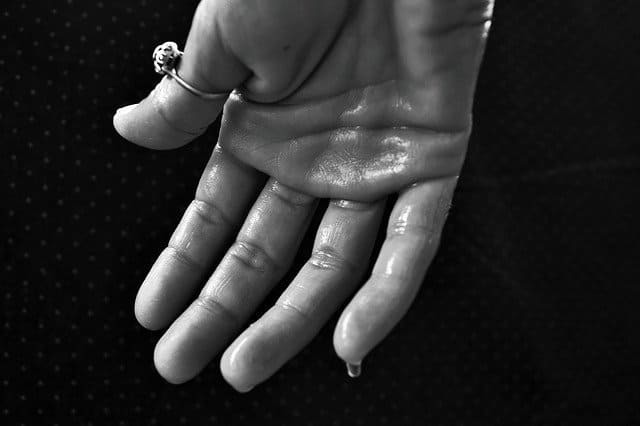
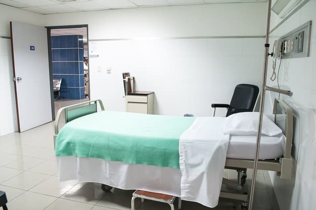
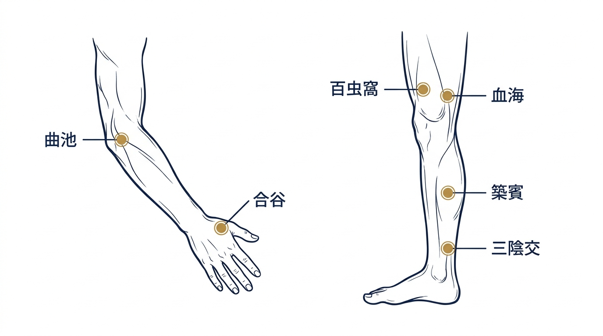

体温調節に必要な量以上の汗を大量にかき、手足や全身の発汗が日常生活の支障となる状態です。
多汗症は体温調節に必要な量を超えて大量に発汗する状態で、体全体に起きる全身性多汗症と、手のひら・足の裏・脇など特定部位に起きる局所性多汗症に分けられます。甲状腺疾患などの基礎疾患が原因となる続発性のほか、明確な原因がない原発性も多くみられます。ストレスや緊張により交感神経が過剰に優位になることが発汗を助長する大きな要因とされています。（公式解説）
このようなお悩みはありませんか？
当院の施術アプローチ

多汗症は、汗を体温調節に必要な量以上大量にかくことです。多汗症では、日常生活に支障が出るほどの汗が出ます。
多汗症には種類があります。全身性多汗症と局所性多汗症です。全身性多汗症の場合、体全身に多量に汗をかきます。局所性多汗症の場合、手の平や足の裏などのある特定の部位に多量に汗をかきます。
多汗症は、何かの病気が原因となり起こることも、原因がはっきりとわからず起こることもあります。
多汗症の原因となることは色々あります。
全身性多汗症の原因は、運動、環境、発熱、更年期障害や甲状腺機能亢進症などの病気、パーキンソン病などの神経障害、薬の副作用、感染症などです。はっきりと原因がわからないことも多いです。
局所性多汗症の原因は、精神的な緊張、辛いものを食べること、神経障害、皮膚の病気などです。局所性多汗症の場合もはっきりと原因がわからないことも多いです。
多汗症は、日常生活に大きな影響を与える悩ましい症状の一つです。多くの人々がこの問題に苦しんでおり、その原因は一概には言えません。多汗症の背後には、生体内部のメカニズムと外部の環境因子が絡み合っています。
まず、多汗症の本質を理解するためには、人間の汗腺という細胞群の役割を理解することから始めましょう。汗腺は私たちの体温を調節するために重要で、これが正常に働かないと多汗症という症状が発生します。
多汗症の一般的な原因は大きく分けて二つあります。一つ目は、何らかの問題や病気によって引き起こされる二次性多汗症です。二つ目は特定の原因が見当たらず突然発生する一次性多汗症、または特発性多汗症と呼ばれるものです。
二次性多汗症は、他の状況や病気が背後に存在します。例えば、甲状腺や糖尿病、心臓の病気、閉経、肺の病気、パーキンソン病、癌、精神的ストレス、薬剤反応などがあります。
特発性多汗症は、具体的な原因が特定できない状態で、手のひら、足の裏、脇の下、頭部や顔など特定の部位で過度の汗をかきます。これは遺伝的な要素が関与している可能性があります。
他にも、ストレスや緊張、暖房の使い過ぎや身体活動、スパイシーな食べ物やアルコール、ニコチンなどは、汗の生成を増加させる可能性があります。また、症状は時間帯や季節により悪化する場合もあります。
多汗症の症状は、日常生活に支障が出るほどの多量の汗をかくことです。多量の発汗が原因で、足や脇の不快な臭いや指先の冷え、手足の水ぶくれなどの症状がらわれることもあります。
多汗症の症状は色々な精神的苦痛にもつながります。仕事や勉強に集中できなくなったり、汗の臭いで対人関係に影響が出たりすることもあるのです。
精神的苦痛が大きかったり大きなストレスを抱えてしまうと、精神疾患を引き起こしてしまう可能性もあります。
多汗症は日常生活に影響を与える可能性のある一般的な症状であり、多くの人々が何らかの形で経験します。それが厄介なだけでなく、日常生活のあらゆる側面を阻害する可能性もあります。しかし、何が正常で何が異常なのかを理解することで、適切な対処法を見つける一助となります。
多汗症は文字通り過度の汗を意味しますが、その症状は人により異なります。一般的な症状には以下のようなものがあります。
過度の汗：最も一般的な症状で、通常、特定の部位（手、足、脇の下、顔）で発生します。これらの部位はエクリン汗腺が特に集中しているところで、体温調節に一役買っています。
汗の発生パターン：多汗症はしばしば特定のパターンに従います。例えば、ストレスや緊張の状況では多汗症が悪化することがあります。また、一部の人々は睡眠中に多汗を経験することがあります。
汗の出方の一貫性：多汗症の人は通常、一定の間隔で過度の汗をかきます。それは日常的な活動中に断続的に、あるいはほぼ絶えず発生することがあります。
皮膚の問題：過度の汗は皮膚の問題を引き起こすことがあります。これには皮膚の白化、皮膚感染、じんましん、皮膚のかゆみなどが含まれます。
心理的影響：多汗症は個人の心理的な健康にも影響を及ぼす可能性があります。社会的な場面や職場での自己意識、恥ずかしさ、ストレスや不安の感情を増大させることがあります。
これらの症状は、他の状況によって引き起こされる可能性があります。したがって、これらの症状が続く場合は、医師に相談することが重要です。
多汗症を改善するためには、原因がはっきりとわかっている場合は原因となっていることを改善します。病気などが原因で多汗症を発症している場合には、原因となっている病気を改善することで多汗症の改善につながるのです。
原因がわからない場合は、薬を使ったりボツリヌス注射を行ったりして改善します。症状が軽い場合は、アルミニウムローションで汗腺を塞いである程度汗をかく量を抑えることもあります。
ストレスは交感神経が優位な状態になるため発汗を促進する作用があります。きちんと睡眠をとり規則正しい生活をすることも改善には大切です。
多汗症は日常生活に影響を与えることがありますが、適切な改善方法と管理によりその影響は大幅に軽減されます。
制汗剤: 最も一般的で手軽な方法は、制汗剤の使用です。制汗剤は、汗腺の開口部を塞ぎ、汗の生成を減らす役割を果たします。アルミニウム塩を主成分とした制汗剤が広く利用されており、通常、夜間に汗をかかない部位に塗布されます。
薬剤: 特定の薬剤が多汗症の症状を軽減することがあります。抗コリン薬は神経伝達物質の作用を阻害し、汗腺の活動を抑えます。しかし、副作用があるため、使用は医師の指導の下で行われます。
イオントフォレーシス: この方法は、微弱な電流を利用して皮膚の汗腺を一時的にブロックします。手や足に多汗症のある人々に特に効果的で、家庭で行うことができます。
ボトックス注射: ボトキュリウス毒素は神経伝達をブロックし、汗腺へのシグナルを遮断します。これにより、汗の生成が抑制されます。効果は数ヶ月続きますが、繰り返しの注射が必要です。
手術: 他の方法が効果的でない場合や症状が極端に重い場合、手術が検討されます。内視鏡的交感神経切除術（ETS）は、多汗症を引き起こす特定の神経を切断または遮断する手術です。
ライフスタイルの変更: ストレス管理、適度な運動、バランスの良い飲食、適切な衣類の選択などのライフスタイルの調整も、多汗症の症状を軽減するのに役立ちます。ストレスや緊張は汗を引き起こす一因となるため、リラクゼーションテクニックやマインドフルネス瞑想などを用いてストレスを管理することが推奨されます。また、適度な運動は体温調節を助け、汗の生成を制御します。

ストレスなどで交感神経が優位になることで起こる多汗症の場合は、日常生活の中で少し気をつけるだけで、多量の汗をかくことを防ぐことができる可能性があります。
まず、気をつけることは食生活です。辛い食べ物や酸味の強い食べ物は交感神経の働きを優位にします。多汗症で悩んでいる場合は、刺激物をたくさん食べることは避けましょう。食事はバランスの良い食事をすることが大切です。
次に気をつけることは生活習慣です。アルコールを飲みすぎないことや禁煙すること、十分な睡眠時間を確保することなどを日常生活の中で気をつけて、交感神経の働きを優位にしすぎないようにしましょう。
交感神経を優位にしすぎないためには、リラックスすることが大切です。心も体もリラックスできる時間をつくるようにしましょう。緊張状態が続かないように、心と体を休める時間を大切にすると良いでしょう。
実際の施術ではお一人おひとりの体質・症状に合わせて選穴しますが、皮膚症状（アトピー性皮膚炎・慢性蕁麻疹・掻痒感）の臨床でよく用いられる代表的なツボの目安です。

| ツボ名 | 位置の目安 | 主な狙い | セルフケアの注意点 |
|---|---|---|---|
| 曲池（きょくち） | 肘を曲げた外側の横ジワ先端 | 皮膚の熱感・炎症・掻痒感の鎮静 | 肘に湿疹・びらん・掻き傷がある場合は直接触れない |
| 血海（けっかい） | 膝のお皿の内側上端から指3本分上 | 蕁麻疹・掻痒・末梢循環の調整 | 皮疹部の摩擦・温灸は痒みを増悪させるため回避 |
| 合谷（ごうこく） | 手の甲、親指と人差し指の骨が交わる手前 | 顔面〜上半身の皮膚トラブル・自律神経調整 | 妊娠中の強刺激は避ける。手荒れ・亀裂時は押圧しない |
| 三陰交（さんいんこう） | 内くるぶし頂点から指4本分上、すね骨の後ろ際 | 乾燥肌・夜間掻痒・体質バランス調整 | 妊娠中の強刺激は避ける。保湿後に清潔な手で優しく |
| 築賓（ちくひん） | 内くるぶしから指7本分上、ふくらはぎ内側 | 慢性蕁麻疹・アレルギー体質・皮膚炎症緩和 | 強く揉まず心地よい圧で数秒キープ |
| 百虫窩（ひゃくちゅうか） | 血海からさらに指1本分ほど上 | 強い痒み・蕁麻疹・湿疹の鎮痒サポート | 皮膚バリアを傷つけないよう必ず指の腹を使用 |
国際的な医学データベース（PubMed・Cochrane等）で報告されている皮膚症状（アトピー性皮膚炎・慢性蕁麻疹・掻痒感）領域の代表的な査読済み鍼灸研究をまとめています（標準治療との併用や研究上の限界を含めて正確に掲載）。
| 年・研究デザイン | 対象・規模 | 主な結果 | 限界・出典 |
|---|---|---|---|
| 2023年 多施設3群RCT | 慢性特発性蕁麻疹 330名（3大学病院） | 4週時のUAS7変化量は真鍼-8.2 vs シャム-4.1 vs 待機-2.2と統計的有意差を確認。 | 最小臨床的重要差には未達・短期追跡。 Ann Intern Med (PMID: 37956431) |
| 2024年 メタ解析 | アトピー性皮膚炎 8 RCTs（n=463） | SCORAD（MD -10.61, p=0.004）、掻痒VAS（MD -14.71, p<0.00001）、DLQI（p<0.0001）が有意改善。 | EASI・IgEは有意差なし、大規模検証が課題。 BMJ Open (PMID: 39638592) |
| 2021年 シャム対照RCT | 軽〜中等症アトピー性皮膚炎 36名（韓国） | 4週時の総SCORAD変化は真鍼-11.83 vs シャム+0.45（P<0.0001）、終了4週後も持続。 | 単施設・小規模（重症例への外挿は慎重）。 BMC Complement Med Ther (PMID: 33926433) |
| 2023年 メタ解析 | 難治性掻痒（尿毒症性掻痒）7 RCTs（n=504） | 通常治療比で有効率RR 1.28（P=0.003）、透析併用でRR 1.42（P=0.0002）と有意に掻痒軽減。 | 透析患者対象のため一般皮膚疾患への外挿に留意。 J Pain Symptom Manage (PMID: 36055470) |
参考文献・出典
通常の日光照射でも露出部に赤み・腫れ・水ぶくれ・強いかゆみが起きる日光アレルギーです。紫外線対策と皮膚科診療を基本に自律神経を整えます。
暑い環境や運動時でも発汗量が正常より少なく、皮膚の乾燥や体温調節の乱れ・熱中症リスクを伴う状態です。
本来毛が生えるべき部位に先天的要因などで毛が全く生えない状態で、専門医での評価とウィッグ等の対症ケア、心身・頭皮環境の調整が大切です。
表皮のメラノサイトが減少・機能停止し皮膚の一部が白く抜ける疾患で、皮膚科での鑑別・標準治療と心身のストレス管理が大切です。
特定の食品に対し免疫が過敏反応を起こす疾患で、専門医での診断・緊急対応を最優先に、自律神経や体調面を補完的に整えます。
膝から下や足関節周囲に網状の皮斑と強い痛みを伴う潰瘍を繰り返す難治性疾患です。皮膚科管理と併用し、潰瘍予防と回復を支えます。
おひとりで悩まず、まずはご相談ください
銀座本院・川口・大宮・横浜・博多・田無の各院でご予約を承っております。